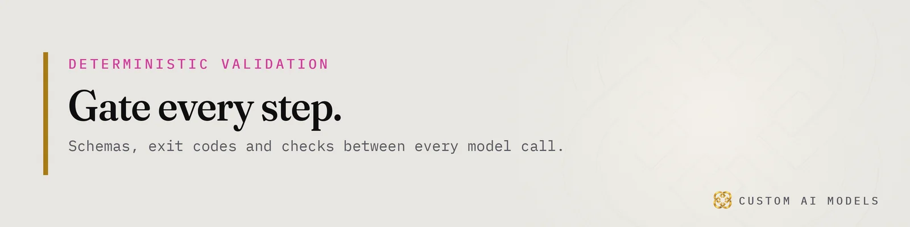
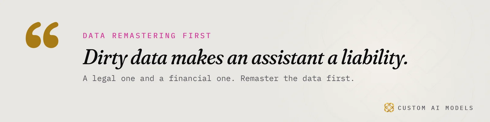
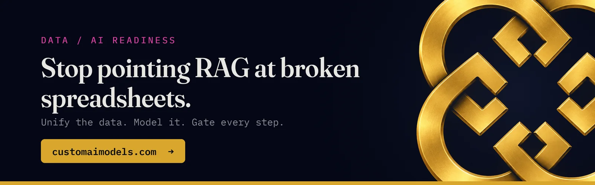

Custom AI Models
Custom AI Models Yeriko Vargas · Founder, Custom AI Models · Oct 2026
Yeriko Vargas · Founder, Custom AI Models · Oct 2026Retrieval augmented generation fails in sentences, not stack traces
You watched the demo. It answered well. Then someone asked a real question and it answered with total confidence and was wrong. Nothing threw an error. That is the core problem with retrieval augmented generation. It fails quietly, in fluent prose.
I have spent 8.5 years in data, and Custom AI Models has been building since 2022. When a founder or an engineering lead hands me a RAG system and asks if it is ready, I do not open the prompt. I open a short list. This article is that list, in the order I run it.
The order matters. Data first. Retrieval second. Gates third. Visibility fourth. The model comes last, and it is usually the part that checks out fine. If you want the architecture behind the list, I wrote it up in RAG isn't a feature. It's an architecture. This piece is the inspection, not the blueprint.

Check the corpus first: RAG for business data
Pull a handful of documents from the index at random. Read them the way a stranger would. Most failed systems fail right here.
- Are there two versions of the same policy, and does the index know which one is current?
- Do the documents contradict each other?
- Did the scanned PDFs turn into clean text, or into noise?
- Did tables survive ingestion, or were they flattened into a run of numbers with no headers?
- Can you name an owner for every source?
If you cannot answer those, the model is not the risk. The corpus is. A confident answer built on a stale price list or a superseded contract clause is a legal and financial liability, and no prompt fixes that.
Then ask a harder question. What happens when a source changes next month? A system without a refresh path is accurate on launch day and wrong afterward. That slow slide is data drift, and it is the reason a system that passed review in spring misleads people by autumn.
I covered the longer version of this in Your AI didn't fail. Your data did. The short rule: unify the data, clean it, give every source an owner, then index it. Not the other way around.
Test retrieval alone: LLM evaluation without the model
Most teams test the final answer. That hides the fault. A wrong answer can come from a bad retrieval or from a bad generation, and you cannot tell which by reading the output.
So I test retrieval alone. Write a set of real questions from real users. For each one, record the source that holds the right answer. Run the questions through the retriever only. Did the right chunk come back? Did it rank near the top? Did a wrong chunk outrank it?
Then add the questions that have no answer in the corpus. A trustworthy system has to say so. A weak one grabs the nearest chunk and builds a story around it.
This is the core of LLM evaluation for a RAG system, and the question set is the asset. Three things to check:
- The question set is versioned and lives in the repo, not in someone's head.
- It runs on every change to chunking, embeddings, filters or sources.
- A drop in retrieval quality fails the build.
If none of that exists, every tweak is a guess. You are tuning by feel and calling it progress.

Look for deterministic validation gates between every step
A model output is a claim. It is not a result. The question is what checks the claim before a person acts on it.
I look for deterministic validation gates written in plain code. Not another model grading the first one. Code that returns a yes or a no. Here is what that looks like in practice:
- The answer must cite source ids, and plain code confirms every id exists in the set that was actually retrieved.
- The output must match a
JSON schema. If it does not, the step fails with a non-zero exit code and nothing downstream runs. - Quoted figures must appear in the cited source text. Not a paraphrase. The figure.
- Below a retrieval confidence floor, the system refuses and routes to a person.
None of this is clever. That is the point. Gates are boring, testable and cheap, and they catch the failures that charm people in a demo and hurt them in production.
The same discipline applies to every tool call in a pipeline. I described how we treat each call as a claim until a check proves it in Twelve tools, one Python pipeline. A RAG system is one more pipeline. It deserves the same treatment.
Ask what you can see: telemetry and RBAC
Ask the team one question. A user got a bad answer yesterday. Can you show me exactly what happened?
A system worth trusting logs the query, the chunks it retrieved with their scores, the prompt it built, the answer, and the result of each gate. That is the telemetry that turns a complaint into a fixable bug. Without it you are debugging a rumor.
Then ask who is allowed to see what. This is where enterprise assistants get dangerous. If the index mixes documents from every team, a clever question can pull a salary file or a board memo into a chat window. Permissions must apply at retrieval time, before any text reaches the model. Filtering the answer afterward is too late, because by then the model has already read it.
That means RBAC on the index itself, tied to the same identity system the rest of the business uses. Not a note in the prompt that says please do not share confidential material.
We hit this exact wall building company infrastructure from zero. Registration, retention and access were the hard parts, not the model. The story is in What replacing four spreadsheets actually took.
What I'd sign off, and what I'd send back
I sign off on a RAG system when I can say yes to all of these:
- Every source has an owner and a refresh path.
- Retrieval is tested alone against a versioned question set.
- Unanswerable questions get a refusal, not an invention.
- Gates in code check citations, schema and figures.
- Every answer leaves a trace I can replay.
- Permissions are enforced before retrieval.
I send it back when the proof is a demo, a screenshot, or a sentence that starts with it usually works. Usually is not an engineering term.
Notice what is missing from the list. Nothing in it asks which model is underneath. That is deliberate. The model is a commodity and you can swap it. The data, the evaluation, the gates and the logs are what you own, and they decide whether the system is a tool or a liability.
If you tried a demo and watched it break, you probably do not need a new model. You need this list run against what you have. Start at the top. The first failure you find is usually the real one.
